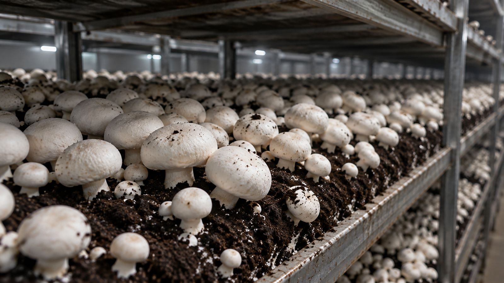
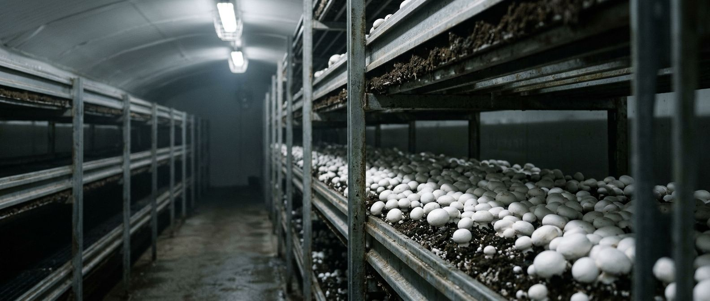

Each room runs its own clock
A growing room is 25 metres of steel racks, five beds high, with a one-metre aisle down the middle. Temperature, humidity and CO₂ are set for the stage the crop is at, so no two rooms are doing the same thing on the same day.
Room 07Day 14
Room 12Day 6
Room 19Flush 2
Room 23Day 2


Picked by hand, because machines bruise caps
Our pickers twist each mushroom off the bed and lay it straight into the tray it will be packed from. Fewer touches means a firmer cap and two more days on your shelf.